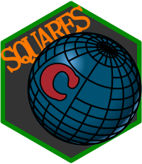
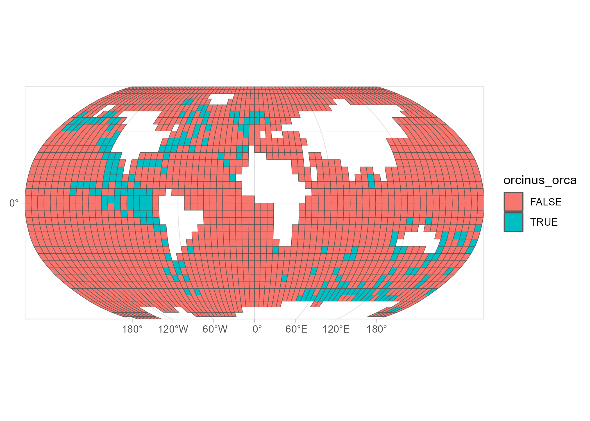

The Concise Spatial QUery And REpresentation System (c-squares) are identifiers that correspond with cells in a global grid. The system was developed by CSIRO Oceans & Atmosphere and divides the globe in rectangles of 10 by 10 degrees (longitude and latitude in WGS84). It is a hierarchical system, meaning that higher resolutions are also supported, as long as its cell size is a tenfold of 1 or 5 degrees (i.e., cells can have the following sizes in degrees: 10, 5, 1, 0.5, 0.1, etc.).
The c-squares format is a well defined exchange format for spatial raster data, it allows for light-weight text querying / aggregation and expansion to different resolutions. The csquare R package facilitates the translation of c-square code into spatial information (sf and stars) and vice versa.
For more technical information on c-squares, please consult the Wikipedia page or the CSIRO c-squares page.
Installation
Get CRAN version
install.packages("csquares")Get development version from r-universe
install.packages("csquares", repos = c("https://pepijn-devries.r-universe.dev", "https://cloud.r-project.org"))Example
The example below is based on killer whale realm data extracted from the publication by Costello et al. (2017).
The orca data set itself is not provided as a simple features object, which is commonly used in R for spatial analyses. Instead, spatial information is encoded in the c-squares format. The example below shows how these codes can be decoded in a spatially explicit format which can be used for subsequent analyses.
library(csquares)
library(sf)
library(ggplot2)
## Convert the data.frame into a csquares object
orca_csq <- as_csquares(orca, csquares = "csquares")
## Convert the csquares object into a simple features object
## and transform to Robinson's projection
orca_sf <-
orca_csq |>
st_as_sf() |>
st_transform(crs = "+proj=robin +lon_0=0 +x_0=0 +y_0=0")
## Make a plot of the spatial data
ggplot(orca_sf) +
geom_sf(aes(fill = orcinus_orca)) +
coord_sf(expand = FALSE)
The example above uses existing data with specified c-square codes. You can also create a raster with c-square codes from scratch. The example below shows how to create a 0.1 x 0.1 degrees raster for a specific bounding box.
st_bbox(c(xmin = 5.0, xmax = 5.5, ymin = 52.5, ymax = 53), crs = 4326) |>
new_csquares(resolution = 0.1)
#> stars object with 2 dimensions and 1 attribute
#> attribute(s):
#> csquares
#> Length:25
#> Class :character
#> Mode :character
#> dimension(s):
#> from to offset delta refsys x/y
#> x 1 5 5 0.1 WGS 84 [x]
#> y 1 5 53 -0.1 WGS 84 [y]References
- https://www.cmar.csiro.au/csquares/
- https://en.wikipedia.org/wiki/C-squares
- Costello, M.J. (2017); University of Auckland https://doi.org/10.17608/k6.auckland.5086654 Licence CC BY 4.0
- Costello M.J., Tsai P., Wong P.S., Cheung A.K.L, Basher Z. & Chaudhary C. (2017); “Marine biogeographic realms and species endemicity” Nature Communications 8, 1057 https://doi.org/10.1038/s41467-017-01121-2